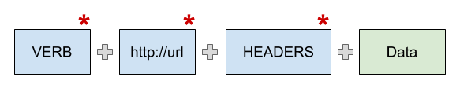

This is one of those rare occasions when disambiguation will not lead to a better understanding. We can safely use REST as a word on its own, without even considering the meaning of each letter. It’s just been decided to write it in capital letters, it doesn’t matter why.
So, why do you need to know what REST is?
Well, if you’re a web developer and you’re working with external API’s, or writing your own service to provide a way of communication with the external world, then you, probably, need to know what tools are at your disposal. REST is a base for most API’s in the world, and a lot of programmers rely on those concepts. In addition, because of its popularity, it provides a methodology not only for the API itself, but also for client applications as well. This is because, in the end, the client will use the provided API and will organize its code accordingly.
Methodology
As I mentioned before, REST is a methodology for writing API. It’s not a framework and not a language, it’s a set of general rules. Those rules provide a way of creating endpoints for your service, and it's doing so by incorporating HTTP specifications. As a result, it gives us a compact, and self-explanatory, list of API endpoints that are easy for clients of the service to use. As a bonus, since we’re using an industry standard methodology - it’s easier for a new developer to understand the logic behind it.
REST - main parts
Each RESTful endpoint is built from basic building blocks:

Blocks with an asterisk are required.
REST verbs
Headers
Headers are metadata about the request or response. They provide information about the status of the requests, content of it, authorizations and more. Let's describe some of them:
Data
REST does not define, by default, what are the data contracts between the server and the client. However part of the methodology lies in using the correct media types that define sent and received types of data. Developers can use an existing one or invent one of their own, but the rule of thumb is - you should use an existing one and extend it if needed.
Where you can find a list of existing media types? No worries, there is a solution. IANA holds a list of registered media types: https://www.iana.org/assignments/media-types/media-types.xhtml. The most used media-type is obviously application/json, because it's general for all JSON data structures you will send or receive in communication with the server.
Those are the main parts of RESTful API. There are additional things to research and study, such as:
As always there is no silver bullet solution, we just need to find the right way for our set of requirements.